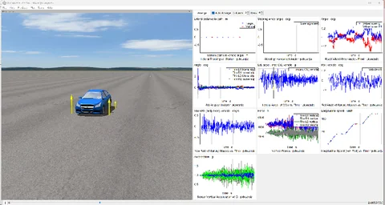
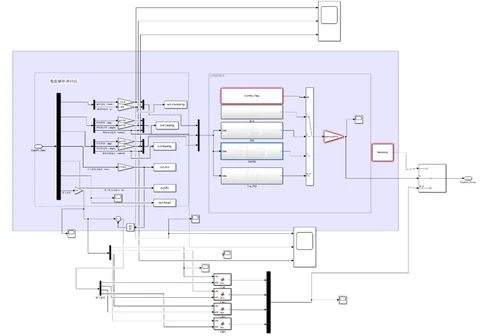

Semi-Active Suspension Control汽车半主动悬架控制方法研究


MATLAB/Simulink · CarSim
- Developed quarter-car and half-car suspension models and configured a CarSim–Simulink full-vehicle co-simulation interface.建立四分之一车与半车悬架模型，配置 CarSim–Simulink 整车联合仿真接口。
- Compared passive suspension, PID, Skyhook, fuzzy PID and GA-tuned PID using acceleration RMS and related metrics.比较被动悬架、PID、Skyhook、模糊 PID 与遗传算法调参 PID，整理加速度 RMS 等评价指标。
Approach & outputs方法与交付说明
- Task任务目标
- Study semi-active suspension control through vehicle models and simulation comparisons.通过车辆模型与仿真对比，研究半主动悬架控制方法。
- Work carried out工作内容
- Suspension-model setup, co-simulation configuration, controller comparison and organization of evaluation outputs.悬架模型搭建、联合仿真接口配置、控制器对比与评价输出整理。
- Approach方法
- Compare the listed control approaches using the model outputs, including acceleration RMS.基于模型输出比较上述控制方法，并采用加速度 RMS 等指标进行评价。
- Outputs & scope交付与范围
- Simulation models, controller comparisons and thesis documentation. The project evidence shown here comes from model-based simulation.仿真模型、控制方法对比及毕业设计文档。此处展示的项目证据来自模型仿真。